The goal of this package is to help researchers estimate plasmid conjugation rates from liquid mating cultures.
During such an experiment a plasmid-carrying donor population D and a recipient population R are mixed together for time t. When a donor and recipient encounter each other, the donor may transfer its plasmid to the recipient, thereby turning it into a transconjugant at rate gamma.D (a conjugation event; adding to the transconjugant population T). Transconjugants can also pass their plasmids to recipients, creating further transconjugants at a rate gamma.T.
We thus distinguish two types of conjugation events: DRT, in which an interaction with a Donor turns a Recipient into a Transconjugant, and TRT, in which an interaction with a Transconjugant turns a Recipient into a Transconjugant.
For more details on the implemented methods, please refer to our paper.
In this vignette we will use a toy dataset (which comes with the package), which reflects the typical output of a conjugation experiment.
#load package
library(conjugator)
#check out the example data
DRT_example
#> ID psi.D psi.R psi.T D.0 R.0 D.t R.t T.t t
#> 1 A1 0.8 1 0.9 10000 10000 1e+07 1e+07 1e+05 7
#> 2 A2 0.8 1 0.9 10000 10000 1e+07 1e+07 1e+05 7
#> 3 A3 0.8 1 1.0 10000 10000 1e+07 1e+07 1e+05 7The functions in the package expect each row of the input data to represent a separate measurement. The id_cols argument can be used to specify which columns contain unique measurement (e.g. sample name or time point) identifiers. The other columns should contain the information necessary to estimate the conjugation rate. This typically includes initial population sizes (D.0 and R.0), final population sizes (D.t, R.t, T.t), and growth rates (psi.D, psi.R, psi.T and/or psi.max). The column names should follow the names specified, but the order is not important.
Several methods to estimate conjugation rates are implemented in this package. We generally recommend using the SM or ASM method.
To calculate the conjugation rates for each row in the input data, select a method (here “ASM”) and run:
# the estimate column contains the estimated conjugation rate
estimate_conj_rate(DRT_example, "ASM")
#> ID estimate method
#> 1 A1 9.004904e-10 ASM
#> 2 A2 9.004904e-10 ASM
#> 3 A3 8.008783e-10 ASMOne can also run multiple methods at the same time, these will be returned in a “long format” (for ease of use with ggplot).
library(ggplot2)
result_df <- estimate_conj_rate(DRT_example, c("SM", "ASM", "T_DR"))
ggplot(result_df, aes(y = estimate, x = ID, colour = method)) +
geom_point(size = 2) +
coord_trans(y = 'log10') +
labs(x = 'Sample ID', y = 'Conjugation Rate Estimate', colour = 'Estimation Method') Using the pivot_wider function from the tidyr package this can easily be transformed into the perhaps more familiar “wide format”.
library(tidyr)
wide_result_df <- pivot_wider(result_df, id_cols = 'ID',
names_from = 'method', values_from = 'estimate')
wide_result_df
#> # A tibble: 3 × 4
#> ID SM ASM T_DR
#> <fct> <dbl> <dbl> <dbl>
#> 1 A1 9.91e-10 9.00e-10 0.000000001
#> 2 A2 9.91e-10 9.00e-10 0.000000001
#> 3 A3 9.91e-10 8.01e-10 0.000000001The methods to estimate conjugation rates make assumptions about the relative importance of different processes such as depletion of the recipient population, or the contribution of transconjugants to conjugation. We have derived an estimate for the time until each of these (three) assumptions breaks down. To obtain accurate estimates of the conjugation rates, one should measure prior to the minimum of the reported critical times. This time gives an upper limit for the duration of the conjugation step in the mating protocol.
# the example data for the TRT experiment
print(TRT_example)
#> ID psi.D psi.R psi.T D.0 R.0 D.t R.t T.t t
#> 1 A1 0.9 1 0.9 10000 10000 1e+07 1e+07 1e+05 7
#> 2 A2 0.9 1 0.9 10000 10000 1e+07 1e+07 1e+06 7
#> 3 A3 1.0 1 1.0 10000 10000 1e+07 1e+07 1e+06 7
# estimate the critical times
estimate_crit_time(DRT_example, TRT_example, tol_factor = 10)
#> ID gamma.D gamma.T tcrit1 tcrit2 tcrit3 min_tcrit
#> 1 A1 9.004904e-10 1.000545e-09 9.80 11.6 11.5 9.80
#> 2 A2 9.004904e-10 1.000545e-08 7.49 11.6 10.2 7.49
#> 3 A3 8.008783e-10 1.001098e-08 7.49 11.8 10.2 7.49The tolerance factor here can be compared with a numerical tolerance in optimisation algorithms, indicating how close the system is allowed to approach a state where it violates the ASM assumptions (smaller values allow greater violation). You can typically leave it set to 10.
This function can also be used with a single dataframe that already contains gamma.D and gamma.T values.
example_data <- cbind(DRT_example[, c('ID', 'psi.D', 'psi.R', 'psi.T', 'D.0', 'R.0')],
'gamma.D' = c(1e-11, 1e-11, 1e-11),
'gamma.T' = c(1e-11, 5e-11, 1e-9) )
estimate_crit_time(example_data, TRT = NULL, tol_factor = 10)
#> ID gamma.D gamma.T tcrit1 tcrit2 tcrit3 min_tcrit
#> 1 A1 1e-11 1e-11 14.4 17.3 16.6 14.4
#> 2 A2 1e-11 5e-11 12.8 17.3 15.7 12.8
#> 3 A3 1e-11 1e-09 9.8 17.3 13.9 9.8To see whether it would make sense to run the second experiment (TRT) before going through the trouble of carrying it out, it can be relevant to estimate what the impact of higher conjugation rates from transconjugants would be on the critical time. Assuming we can estimate gamma.D from the input DRT experiment, this function scans across a range of gamma.T/gamma.D ratios to determine the resulting critical time. Due to transitory derepression, one would typically expect gamma.T/gamma.D > 1.
# the range of gamma.T/gamma.D ratios (multiplication factors) to evaluate
gamma_mult_factors <- 10**seq(-2, 5, 1)
scan_result <- scan_crit_time(DRT_example, tol_factor = 10, mult_seq = gamma_mult_factors)
scan_result
#> ID mult_factor gamma.D gamma.T tcrit1 tcrit2 tcrit3 min_tcrit
#> 1 A1 1e-02 9.004904e-10 9.004904e-12 14.500 11.6 14.10 11.600
#> 2 A1 1e-01 9.004904e-10 9.004904e-11 12.200 11.6 12.90 11.600
#> 3 A1 1e+00 9.004904e-10 9.004904e-10 9.900 11.6 11.60 9.900
#> 4 A1 1e+01 9.004904e-10 9.004904e-09 7.600 11.6 10.30 7.600
#> 5 A1 1e+02 9.004904e-10 9.004904e-08 5.300 11.6 9.01 5.300
#> 6 A1 1e+03 9.004904e-10 9.004904e-07 3.000 11.6 7.73 3.000
#> 7 A1 1e+04 9.004904e-10 9.004904e-06 0.693 11.6 6.45 0.693
#> 8 A1 1e+05 9.004904e-10 9.004904e-05 -1.610 11.6 5.17 -1.610
#> 9 A2 1e-02 9.004904e-10 9.004904e-12 14.500 11.6 14.10 11.600
#> 10 A2 1e-01 9.004904e-10 9.004904e-11 12.200 11.6 12.90 11.600
#> 11 A2 1e+00 9.004904e-10 9.004904e-10 9.900 11.6 11.60 9.900
#> 12 A2 1e+01 9.004904e-10 9.004904e-09 7.600 11.6 10.30 7.600
#> 13 A2 1e+02 9.004904e-10 9.004904e-08 5.300 11.6 9.01 5.300
#> 14 A2 1e+03 9.004904e-10 9.004904e-07 3.000 11.6 7.73 3.000
#> 15 A2 1e+04 9.004904e-10 9.004904e-06 0.693 11.6 6.45 0.693
#> 16 A2 1e+05 9.004904e-10 9.004904e-05 -1.610 11.6 5.17 -1.610
#> 17 A3 1e-02 8.008783e-10 8.008783e-12 14.600 11.8 14.20 11.800
#> 18 A3 1e-01 8.008783e-10 8.008783e-11 12.300 11.8 12.90 11.800
#> 19 A3 1e+00 8.008783e-10 8.008783e-10 10.000 11.8 11.60 10.000
#> 20 A3 1e+01 8.008783e-10 8.008783e-09 7.720 11.8 10.40 7.720
#> 21 A3 1e+02 8.008783e-10 8.008783e-08 5.420 11.8 9.08 5.420
#> 22 A3 1e+03 8.008783e-10 8.008783e-07 3.110 11.8 7.80 3.110
#> 23 A3 1e+04 8.008783e-10 8.008783e-06 0.810 11.8 6.52 0.810
#> 24 A3 1e+05 8.008783e-10 8.008783e-05 -1.490 11.8 5.24 -1.490
ggplot(scan_result) +
geom_point(aes(y = min_tcrit, x = log10(mult_factor))) +
facet_wrap(vars(ID)) +
labs(x = 'Log ratio between gamma.T and gamma.D', y = 'Minimal Critical Time')
The package currently also contains a function to estimate growth rates from OD data. This is included only for convenience and no guarantees can be made for correctness! Generally we recommend using a dedicated package such as growthcurver to estimate growth rates.
growth_example
#> # A tibble: 38 × 3
#> Time_h Donor_OD Recipient_OD
#> <dbl> <dbl> <dbl>
#> 1 0 0.00745 0.0140
#> 2 0.324 0.0176 0.0170
#> 3 0.649 0.0281 0.0187
#> 4 0.973 0.0408 0.0279
#> 5 1.30 0.0622 0.0406
#> 6 1.62 0.0928 0.0694
#> 7 1.95 0.120 0.0922
#> 8 2.27 0.148 0.110
#> 9 2.59 0.163 0.128
#> 10 2.92 0.167 0.133
#> # … with 28 more rows
growth_df <- growth_example[1:15, c('Time_h', 'Donor_OD')]
growth_fit <- estimate_growth_rate(growth_df, t_start = 0, t_col = 'Time_h')
growth_plot <- get_growth_fit_for_plot(growth_df, t_col = 'Time_h', growth_fit)
ggplot() +
geom_point(data = growth_df, aes(x = Time_h, y = Donor_OD)) +
geom_line(data = growth_plot, aes(x = time, y = OD))